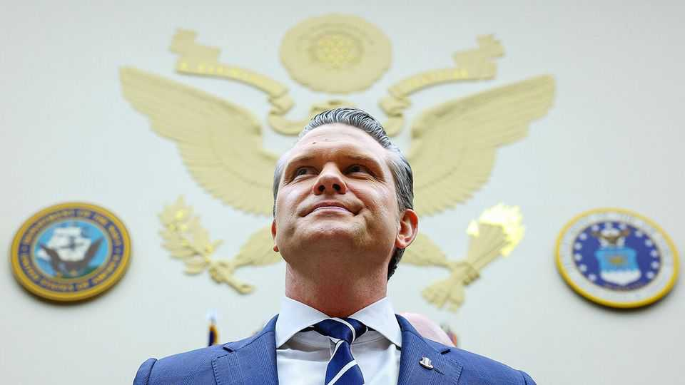

Pete Hegseth is conquering the Pentagon
His latest purge claims the army’s great reformer

Sep 3rd 2026
A year and a half ago few would have wagered that Pete Hegseth would consolidate power at the Pentagon. Narrowly confirmed by the Senate amid allegations of financial mismanagement in prior jobs and heavy drinking, which Mr Hegseth denied, the former Fox News host and voluble culture warrior appeared underqualified and no match for the generals and admirals he would direct. In office, the secretary of war has skirted scandal, be it mishandling secrets or forcing polygraph tests on his underlings. But far from seeing his power wane, Mr Hegseth has taken control of his department. A rolling purge of the armed forces has cleared out his rivals and those deemed insufficiently loyal.
Dan Driscoll, the army secretary, is his latest casualty. On August 31st Mr Driscoll tendered his resignation to the president after months of clashes with Mr Hegseth over the ouster of senior officers and the future of the force. Widely respected and viewed as a savvy reformer, Mr Driscoll’s departure raises yet more questions about the turmoil roiling the Pentagon and the viability of reforms meant to drive the army’s adaptation to the age of drones.
Mr Hegseth’s purges have been dramatic. Since taking office, he has ousted at least 24 flag or general officers. Many appear to have been dismissed for no reason beyond their race, sex or associations with officers Mr Hegseth disliked. A former national guardsman who rose to the rank of major, Mr Hegseth has long held a particular grudge against the army, an institution he claims “spit me out”. In April he sacked General Randy George, the most senior army officer and someone with whom Mr Driscoll had forged a close relationship. Chris Donahue, who headed US Army Europe and Africa, was forced into retirement two months later after Mr Hegseth downgraded his command. As of today the army has no Senate-confirmed chief of staff, secretary or commander of forces in Europe. Mr Driscoll’s deputy is also said to be on the cusp of leaving.
Mr Driscoll fought back as best as he could. “He prevented a number of officers from being fired or blocked,” says a congressional aide. Mr Hegseth’s recent removal of seven army officers from a list of 18 approved for promotion to two-star general may have been the final straw.
The departure comes at a pivotal time. Mr Driscoll, a confidant of J.D. Vance, the vice-president, is believed to have acted as a check on Mr Hegseth’s more hawkish instincts. He made a personal appeal to Donald Trump just days before his resignation, reflecting concerns in many parts of the Pentagon about the mounting strain on the armed forces from the war in Iran and Mr Hegseth’s meddling in the ranks.
Personnel churn has also undermined important modernisation efforts overseen by Mr Driscoll. He has been central to the Pentagon’s drone-procurement efforts (Mr Trump took to calling him “drone guy”). In November he visited Ukraine, forging a tech partnership with its drone specialists. The adulation Mr Driscoll attracted is thought to have upset Mr Hegseth, who is keen to dispense with initiatives associated with him and his allies. A new army battalion set up by General George to master the art of drone warfare, for example, is being phased out by General Christopher LaNeve, the acting chief of staff of the army, who is close to Mr Hegseth.
General LaNeve prefers to talk of a “back-to-basics” approach. While that still includes buying new tech, greater emphasis is being placed on MAGA-ish priorities. General LaNeve has overseen the drawing down of army units from Europe and placed greater focus on the Western hemisphere. Mr Driscoll had also fought with General LaNeve over his efforts to rewrite the army’s physical-fitness standards, a long-running fixation of Mr Hegseth’s.
The secretary is likely to solidify his hold further. Sean Parnell, the Pentagon’s spokesperson, is widely tipped as Mr Driscoll’s replacement. Like his boss, Mr Parnell seems enamoured of the culture wars. His lack of experience running large organisations could make confirmation difficult. But he could still serve in an acting capacity. With each passing day, the Pentagon looks more like Mr Hegseth. ■
Stay on top of American politics with The US in brief, our daily newsletter with fast analysis of the most important political news, and Checks and Balance, a weekly note that examines the state of American democracy and the issues that matter to voters.